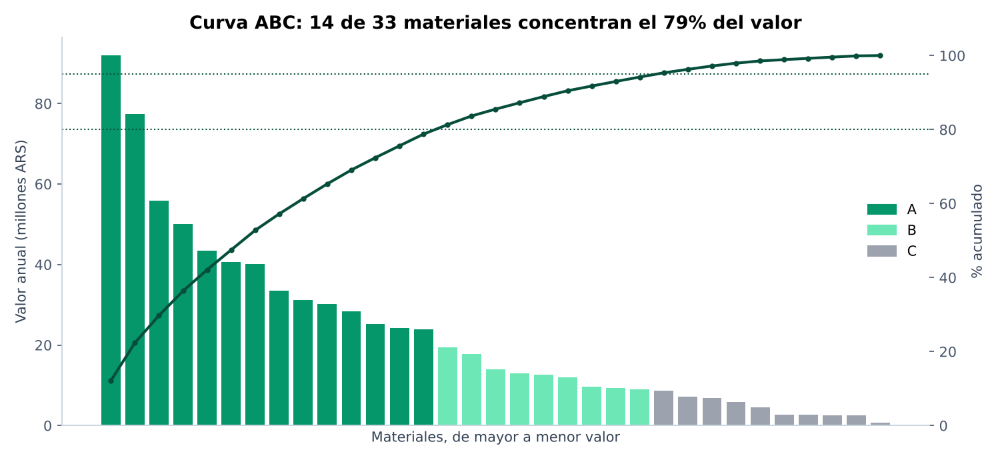
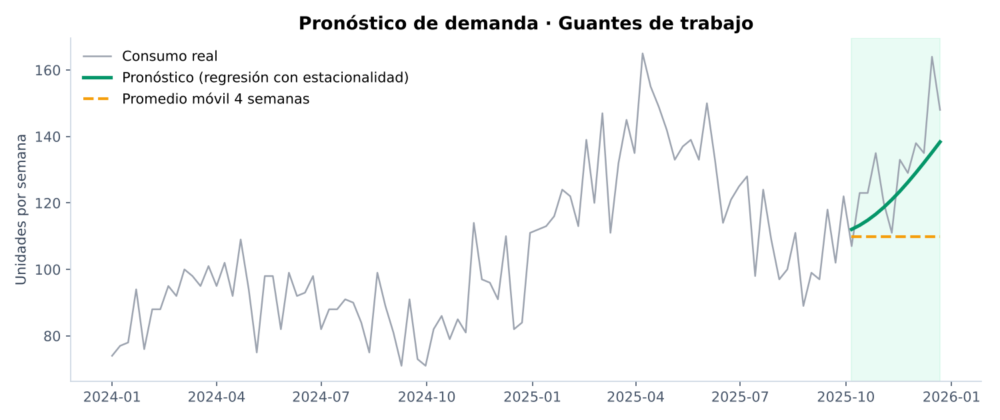
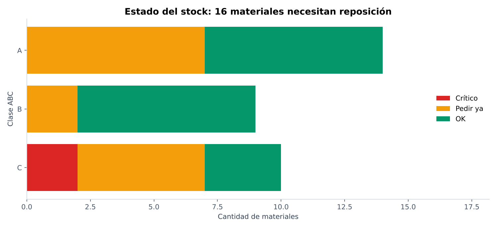
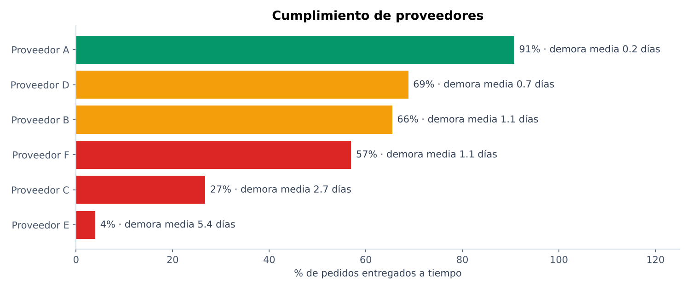

LuSan PRO // data science
Qué materiales concentran el gasto, cuánto se va a consumir, cuándo hay que pedir y qué proveedores cumplen. Un tablero para dejar de decidir a ojo.
Datos simulados (33 materiales, 104 semanas de consumo y 791 pedidos de compra), generados para el proyecto. No corresponden a ninguna empresa real.
Ordena los materiales por valor consumido en el último año. Los de clase A merecen control semanal; los de clase C, revisión mensual.

Comparé dos métodos en las últimas 12 semanas. La regresión con tendencia y estacionalidad tuvo un error de 11%, contra 16% del promedio móvil de 4 semanas.

Punto de pedido = demanda pronosticada durante el plazo de entrega + stock de seguridad (nivel de servicio 95%).

Porcentaje de pedidos recibidos en la fecha prometida y demora media cuando llegan tarde.

Lista lista para pasar a compras, con la cantidad sugerida para cubrir el plazo de entrega más 4 semanas.
| Material | Clase | Proveedor | Stock | Punto de pedido | Semanas de cobertura | Pedir | Estado |
|---|---|---|---|---|---|---|---|
| Bulón M16 | C | Proveedor C | 1 | 11 | 0.5 | 18 | Crítico |
| Válvula de freno | C | Proveedor E | 2 | 22 | 0.6 | 34 | Crítico |
| Chaleco reflectivo | C | Proveedor F | 52 | 363 | 0.5 | 766 | Pedir ya |
| Rodamiento 6308 | A | Proveedor F | 88 | 269 | 1.0 | 520 | Pedir ya |
| Filtro de aire | A | Proveedor A | 75 | 112 | 1.2 | 295 | Pedir ya |
| Rodamiento 6205 | C | Proveedor D | 11 | 21 | 1.4 | 42 | Pedir ya |
| Pastilla de freno | C | Proveedor A | 14 | 18 | 1.8 | 36 | Pedir ya |
| Filtro hidráulico | A | Proveedor B | 63 | 90 | 1.9 | 163 | Pedir ya |
| Junta tórica | C | Proveedor C | 14 | 34 | 1.9 | 49 | Pedir ya |
| Disco de freno | A | Proveedor C | 236 | 394 | 2.4 | 555 | Pedir ya |
| Anteojos de seguridad | A | Proveedor C | 181 | 299 | 2.4 | 416 | Pedir ya |
| Electroválvula | B | Proveedor E | 15 | 36 | 2.5 | 46 | Pedir ya |
| Filtro de aceite | A | Proveedor C | 49 | 76 | 2.7 | 99 | Pedir ya |
| Guantes de trabajo | A | Proveedor C | 568 | 593 | 3.8 | 628 | Pedir ya |
| Cable 4mm (rollo) | B | Proveedor E | 289 | 290 | 4.7 | 247 | Pedir ya |
| Aceite hidráulico (20L) | C | Proveedor E | 26 | 30 | 5.2 | 24 | Pedir ya |